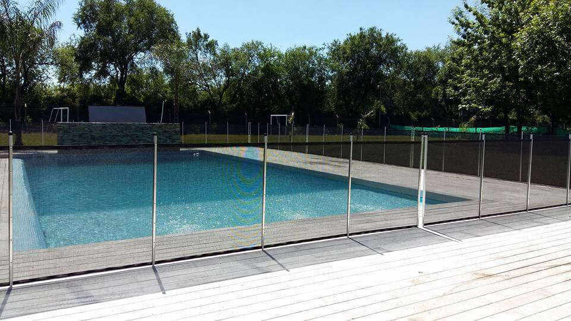

PREGUNTAS FRECUENTES
- ¿USTEDES INSTALAN LOS CERCOS?
- Si, Contamos con personal altamente capacitados con más de 15 años de experiencia en instalación de Cercos y asesoramiento personalizado.
- ¿EL CERCO TIENE UN CIERRE BIEN SEGURO?
- Si, se utilizan cierres tipo broches con mecanismo de seguridad, para que los niños no puedan abrirlos
- ¿SIRVE EL CERCO COMO CERRAMIENTO DE OTROS ESPACIOS?
- Si, nuestros cercos pueden ser instalados para delimitar cualquier espacio donde se quiera proteger del ingreso o egreso de niños y/o mascotas. En cualquier situación, cumplirá con su principal objetivo que es la SEGURIDAD.
- ¿A QUE PROFUNDIDAD SON LAS PERFORACIONES?
- Si la instalación es sobre loseta o cemento, se perfora a unos 9/10cm de profundidad. Si la instalación es sobre cesped, se clava una estaca hasta los 48cm aproximadamente de porfundidad
- ¿EN LA INSTALACIÓN SOBRE LOSETA, HAY POSIBILIDADES DE PERFORAR LOS CAÑOS DE LA PISCINA?
- Si, ya que la perforación se realiza con una máquina del tipo instrustrial que trabaja con agua por lo que no hay posibilidades en el momento de saber si se esta o no perforando algun caño. POR ESTE MOTIVO, ES INDISPENSABLE QUE PREVIO A LA INSTALACION, SE LE INFORME AL INSTALADOR LA UBICACION EXACTA DE LAS CAÑERIAS.
- ¿EN LA INSTALACION SOBRE CESPED, PUEDE SER QUE NO TENSE BIEN EL CERCO?
- Si, ya que este tipo de instalación depende mucho de la densidad del suelo.
